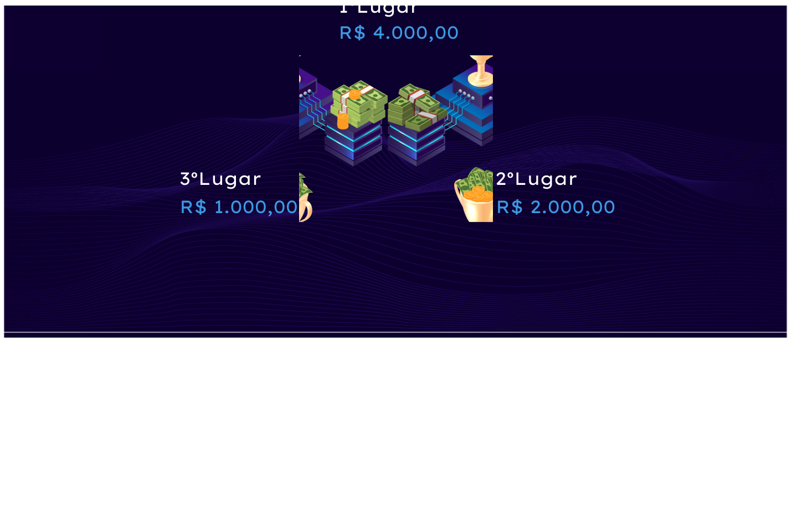

OBJETIVOS
Fomento à inovação
Desenvolver uma cultura de inovação e criação de novas ideias para solucionar problemas presentes em nossa sociedade
Fonte de aprendizado
Oportunidade de aprendizado para todos os participantes, pois cada atividade estimula a criatividade e se transforma em conhecimento
Aceleração de ideias
Surgimento de ideias incríveis que poderão se tornarem projetos de grande impacto na vida de muitas pessoas direta ou indiretamente.
Trabalho em equipe
Interação entre participantes de multidisciplinas, que poderão trabalhar juntos e aprenderem coisas novas
Desafio
Incentivar a implementação de projetos que estão guardados ou que precisam ser melhorados
Implementação de projetos
Incentivar a implementação de projetos que estão guardados ou que precisam ser melhorados
FASES DO EVENTO
PERÍODO DE INSCRIÇÕES
02/11/2020 a 09/11/2020Para se inscrever, é preciso preencher o formulário de inscrição, onde poderão participar equipes de 4 (quatro) membros, devendo ser organizadas preferencialmente da seguinte forma: - 1x Perfil Business, 2x Hackers (Desenvolvedores) e 1x UX/UI (Design). Obs: Os membros da equipe deverão estar com matrícula ativa em instituição pública ou privada de ensino, em nível de curso técnico ou graduação. Canal para dúvidas: hackathon@navi.ifrn.edu.br
INSCREVA-SE AQUI!LIVE DE ABERTURA
14/11/2020 às 20hLive que dará início ao evento. Já marque em sua agenda para não esquecer!
Etapa 1: Brainstorming e Ideação
14/11/2020 a 19/11/2020A equipe participante deverá enviar um link de vídeo (ex: youtube) por meio do link abaixo. O vídeo deve ser em formato de pitch com duração de até 3min descrevendo a proposta de solução.
ENVIAR PROPOSTAEtapa 2: Prototipação da solução
21/11/2020 a 26/11/2020A equipe participante deverá produzir um protótipo de média fidelidade e enviar um link de vídeo (ex: youtube) por meio do link abaixo. O vídeo deve ter duração de até 2min explicando o protótipo desenvolvido.
ENVIAR APRESENTAÇÃOEtapa Final: Apresentação do MVP e Premiação
30/11/2020A equipe participante deverá enviar um link de vídeo (ex: youtube) por meio do link abaixo. O vídeo deve ser em formato de pitch e ter duração de até 2min explicando o MVP (Produto Mínimo Viável). Além disso, deve também disponibilizar os arquivos da solução proposta através de pastas na nuvem (ex: github, google drive...).
ENVIAR PROJETOPRÊMIOS INCRÍVEIS
INFORMAÇÕES DE APOIO
Introdução à Causa Básica do Óbito
Todos os dias milhares de mortes são registradas no Brasil. Para simplificar o registro desses óbitos, foi criado o sistema de Codificação das Causas Básicas do Óbito. Ele serve para que seja possível identificar a causa primária da morte de uma pessoa, como por exemplo uma doença ou uma arma.
Dessa forma, a utilização da codificação do óbito se amplia exponencialmente e é identificada como uma demanda permanente do sistema de saúde. Sendo natural que a codificação do óbito passe a ser uma tarefa institucional primordial a ser assumida organicamente pelo Sistema Único de Saúde.
Objetivo
Construir soluções inovadoras que auxiliem na codificação da causa básica do óbito que compõem o Sistema Seletor de Causa Básica de Óbito.
Regulamento do evento
CONFERIR REGULAMENTO COMPLETOEixos temáticos
1 - Tecnologias para melhoramento na codificação da causa básica do óbito:
Propor soluções inovadoras que auxiliem a codificação da causa do óbito, incluindo validação da codificação especificada e propor a codificação mais acurada da CBO se necessário.
2 - Desenvolvimento de Sistemas de Recomendação em CBO:
Propor sistemas de recomendação baseados em histórico de codificação da causa do óbito, que atuem como assistentes virtuais dos profissionais em CBO, a partir de modelos preditivos especializados na Classificação Internacional de Doenças e Problemas Relacionados à Saúde (CID-10).
3 - Tecnologias para Treinamento de Profissionais em CBO:
Propor recursos educacionais abertos que auxiliem no processo de formação dos profissionais em CBO, incluindo simuladores da codificação de DO “Declaração de óbito”, jogos sérios ou objetivos de aprendizagem como foco em codificação da causa básica do óbito.
A declaração de óbito é composta por campos informativos como Idade, Sexo, setor laboral, e pricipalmente doenças ou agravos que levaram a pessoa ao óbito. Este último é chamado Bloco V, é dele que o codificador retira as informações necessária para codificar a causa básica do óbito.
Aqui pretende-se buscar tecnologia que simula esse processo de codificação e auxilie a memorização das regras.
COMISSÃO ORGANIZADORA
PARTICIPE!
Fique ligado(a) nas regras
Inscrições de 02/11/2020 a 09/11/2020Para se inscrever, é preciso preencher o formulário de inscrição, onde poderão participar equipes de 4 (quatro) membros, devendo ser organizadas preferencialmente da seguinte forma: - 1x Perfil Business, 2x Hackers (Desenvolvedores) e 1x UX/UI (Design)
Obs: Os membros da equipe deverão estar com matrícula ativa em instituição pública ou privada de ensino, em nível de curso técnico ou graduação.
Canal para dúvidas: hackathon@navi.ifrn.edu.br